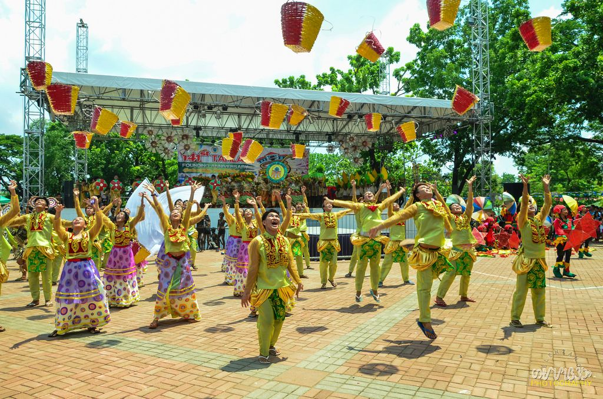
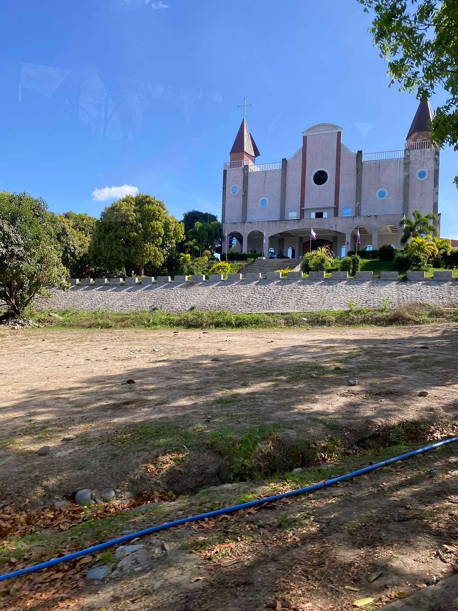
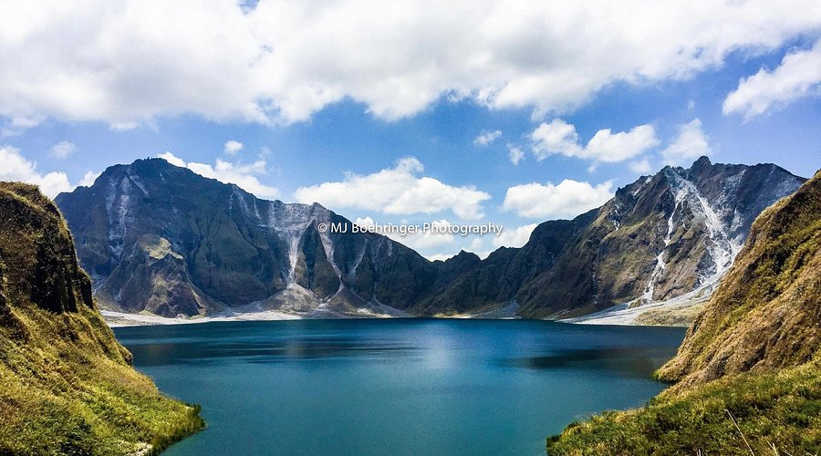
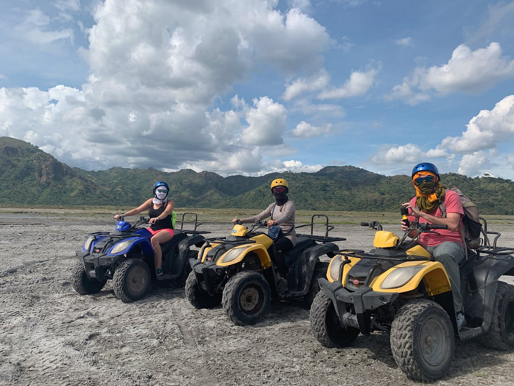
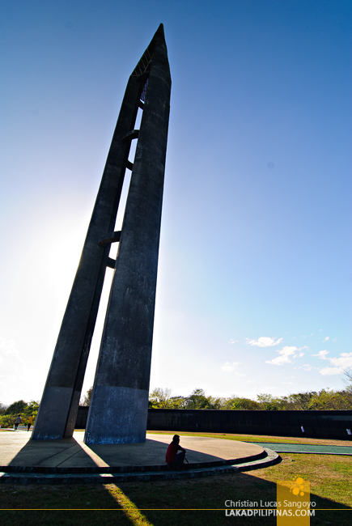
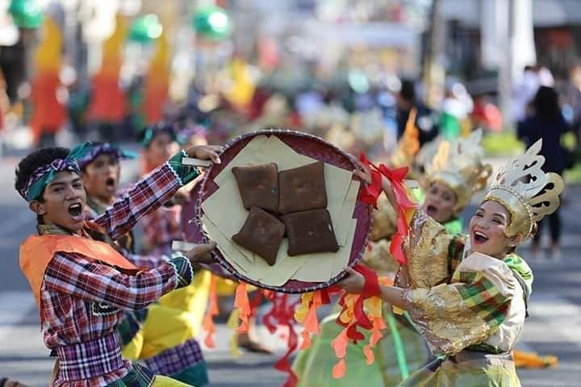

A province defined by its resilience, diverse heritage, and untamed beauty.
Tarlac stands as the geographic center of Central Luzon. It is the vital intersection point between the bustling National Capital Region and the northern provinces, making it the perfect gateway for those looking to explore the hidden treasures of the north.
Born from the plains and the Aeta people's heritage, Tarlac has been a witness to the most pivotal moments in Philippine history. From serving as the seat of the First Philippine Republic to bearing the scars and honor of the Bataan Death March, our land is a testament to the nation's enduring spirit.

Known as the "Melting Pot of the Philippines," Tarlac is a beautiful fusion of Kapampangan, Ilocano, Pangasinense, and Tagalog influences. This rich tapestry is best seen in our colorful festivals, our diverse heirloom cuisines, and a lifestyle that values communal harmony and vibrant, welcoming hospitality.

Experience serenity at the Monasterio de Tarlac. As you stand beneath the Risen Christ, the cool mountain air and panoramic views provide a sanctuary for quiet reflection.

Embark on a trek to the crater of Mt. Pinatubo. It is an awe-inspiring journey through raw volcanic terrain that ends at a breathtaking, turquoise-colored lake.

At the Tarlac Recreation Park, adventure is the standard. Whether you are navigating extreme ATV trails or conquering bike paths, we have the terrain to satisfy your wild side.
From the unique dining structures at Isdaan to local delicacies like authentic chicharon, Tarlac turns every meal into a memorable, vibrant culinary adventure.

Pay your respects at the Capas National Shrine. It is more than a monument; it is a profound journey into the courage and history that defined our nation’s path.

See the Philippines from the inside out. Tarlac offers a genuine look at local life, defined by the warmth of our people and the depth of our traditions.